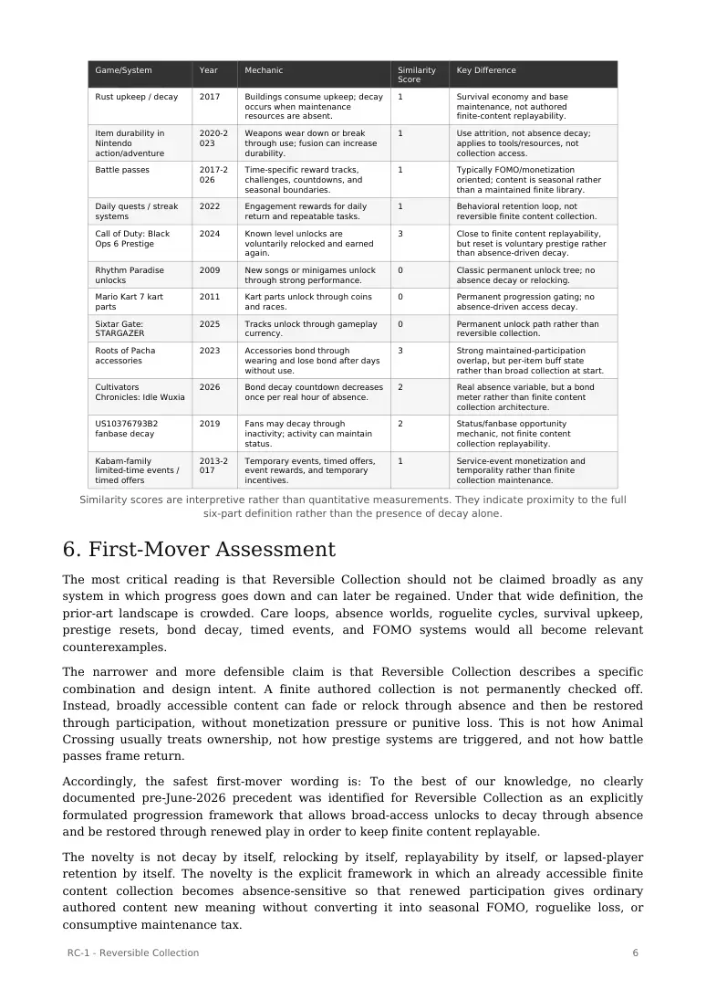

PDF page 1
RC-1 - Reversible Collection
Participation-Based Replayability for Finite Content Libraries
Raynor Eissens
DOI: 10.5281/zenodo.20736718
June 2026
Citation
Eissens, R. (2026). RC-1 - Reversible Collection: Participation-Based Replayability for Finite Content Libraries. Zenodo. https://doi.org/10.5281/zenodo.20736718
PDF page 2
Table of Contents
Abstract
Origin Statement
1. Introduction
2. Canonical Definition
Figure 1. Reversible Collection Participation Cycle
3. Design Principles
4. Prior-Art Investigation
5. Prior-Art Matrix
6. First-Mover Assessment
7. Formal Model
8. GACHIGASM Case Study
9. Applications Beyond Games
10. Discussion
11. Conclusion
References
1 RC-1 - Reversible Collection
PDF page 3
Abstract
Reversible Collection is a progression framework for finite content libraries in which replayability emerges from maintained participation rather than permanent ownership. Traditional progression systems commonly move from locked content toward permanent completion: the player begins with limited access, unlocks more content through performance or time investment, and eventually reaches a terminal state in which the authored library has been exhausted. This structure can reduce replayability once completion is achieved and can push designers toward downloadable content, seasonal rotation, battle passes, daily reward loops, or other external retention mechanisms.
Reversible Collection proposes a different design grammar. A player may begin with broad or full access to a finite library, while access states can gradually decay, fade, weaken, or relock through real-time absence or inactivity. The same content is then restored through ordinary play, turning return into rediscovery rather than punishment. The framework therefore reframes collection not as static possession but as an ongoing relation between player and finite authored content.
A prior-art investigation covering care loops, absence-driven worlds, prestige systems, roguelikes, survival upkeep, item durability, battle passes, daily streaks, rhythm-game unlocks, racing-game unlocks, accessory bonding, and public patent examples found many partial overlaps but no exact documented precedent for the complete combination. To the best of our knowledge, no pre-June-2026 public source was identified that names or standardizes Reversible Collection as an explicit progression framework combining broad access, absence-driven decay, restorative replay, non-final completion, finite content maintenance, and a rediscovery-oriented non-FOMO framing.
The framework appears to represent a novel synthesis of existing design patterns rather than an entirely unprecedented mechanic in isolation. Its relevance lies in giving finite libraries a durable replay structure without requiring infinite asset production or punitive scarcity design.
Keywords: reversible collection; replayability; progression design; finite content; absence decay; restorative replay; game design; maintained participation.
Origin Statement
Reversible Collection was formulated by Raynor Eissens during development of the browser-based rhythm racer GACHIGASM in June 2026. The framework emerged from a practical design problem: how can a finite authored library, especially a music and route library, remain replayable after the player has already encountered or unlocked most of its content? RC-1 defines the answer as a named progression framework: access can remain broad, relation can soften through absence, and ordinary play can restore the collection without converting it into a battle pass, punishment loop, or endless content treadmill.
1. Introduction
A common problem in game progression is that completion is treated as an absorbing state. The player begins without access, unlocks content through play, and ultimately reaches a point where the system can no longer meaningfully offer the same authored library as progression. In that model, 100 percent completion is simultaneously an achievement and a design endpoint.
For finite content libraries such as music tracks, racing routes, levels, vehicles, characters, cosmetics, galleries, or collectible sets, permanent completion can produce content exhaustion. Once everything has been collected, replay often depends on mastery, score optimization, social competition, procedural variation, player self-imposed challenges, or the addition of new content.
2 RC-1 - Reversible Collection
PDF page 4
These approaches can be effective, but they do not directly solve the finite-library problem at the level of collection architecture.
Reversible Collection introduces a different progression premise. Instead of asking how a player can permanently own every item, it asks how a finite library can remain alive through renewed participation. The system begins from broad access rather than scarcity, allows access states to soften through absence, and lets the player restore them through normal play. The value of the library is therefore not exhausted by completion; it is periodically renewed through return.
This paper defines Reversible Collection as a named framework, situates it against related prior-art families, provides a matrix of near precedents, introduces a formal model, and describes GACHIGASM as an initial implementation context. The purpose is not to claim that decay, relocking, or replay loops are new in isolation. The purpose is to specify the particular synthesis: broad access plus absence-sensitive reversible access plus restorative replay for finite content libraries, framed as rediscovery rather than punishment or FOMO.
2. Canonical Definition
Reversible Collection is a progression framework in which finite game content remains replayable by allowing broadly accessible unlocked collections to decay through absence and be restored through renewed play, thereby shifting collection design from permanent ownership to maintained participation.
The definition contains six necessary components. First, the object of the framework is a finite content library rather than an infinite live-service pipeline. Second, the starting condition is broad access rather than conventional scarcity. Third, access can decay through absence, inactivity, or real time. Fourth, decay is reversible. Fifth, restoration occurs through ordinary gameplay rather than payment or external deadline compliance. Sixth, the experiential framing is rediscovery, maintenance, and participation rather than punishment, permanent loss, or monetized urgency.
The concept is narrow by design. A system is not Reversible Collection merely because it contains decay, loss, maintenance, relocking, or replay. It qualifies only when these functions operate together around a finite authored collection and preserve replayability by making access relational and recoverable.
Figure 1. Reversible Collection Participation Cycle
Broad Access Absence Soft Decay Replay Restoration Broad Access
available library time away faded/relocked ordinary play renewed relation cycle repeats
The participation cycle shows how a finite collection remains active through reversible relation rather than terminal ownership.
3. Design Principles
3.1 Broad Access First
The player begins with full or substantial access to the library. This reverses the standard unlock curve. Instead of starting with scarcity and building toward completion, the player starts with a playable world of content and later experiences soft variation in access through absence and return.
3.2 Absence-Driven Decay
3 RC-1 - Reversible Collection
PDF page 5
Decay is triggered by inactivity, absence, or elapsed real time, not by failure, weapon use, death, prestige choice, or season-end scarcity. The core change occurs when the player has not maintained contact with a portion of the library.
3.3 Restorative Replay
The primary recovery method is normal play. The player does not need to buy back access, meet an external calendar event, or grind unrelated filler tasks. The system invites renewed engagement with the content itself.
3.4 No Permanent Completion State
A completed collection is not an absorbing end state. Access states can oscillate between full availability, softened availability, and restoration. Completion becomes a temporary condition rather than a final archive.
3.5 Collection as Participation
Ownership becomes relational. The library is not only a set of obtained assets but a field of maintained participation. The design emphasis shifts from possession to active relation.
3.6 Rediscovery Instead of Punishment
Decay must be tuned and presented as rediscovery. If players experience it as confiscation, punishment, or coercive retention, the framework collapses into familiar FOMO or maintenance-tax design. The tone of implementation is therefore mechanically and ethically central.
4. Prior-Art Investigation
The prior-art search was bounded by the six-part definition above: broad starting access, decay or relocking through real time or absence, restoration through ordinary play, no definitive completion state, finite content that remains replayable, and a framing of loss as rediscovery rather than punishment. Public sources showed many examples of decay, resets, streaks, prestige, daily engagement, time-limited content, and progression cycles, but these examples generally lacked one or more essential components of Reversible Collection.
The search space included official support pages and manuals, GDC-adjacent design sources, academic papers, public game taxonomies, Steam and itch-adjacent materials, public patents, console examples, mobile/live-service examples, and obscure indie references where discoverable. This does not constitute a closed legal novelty search. Public internet and document research can show that a concept is not easily identifiable in known public traces; it cannot prove the absence of internal prototypes, unpublished pitches, obscure regional releases, or non-indexed patent families. The resulting claims are therefore intentionally cautious.
Taxonomically, the situation is also informative. The Game Ontology Project provides a broad hierarchy for game analysis, while Machinations and related design vocabulary discuss dynamic decay as a general category of gradual deterioration over time. These vocabularies contain language for decay, cycles, progression, and temporality, but no standardized public term was identified for the precise pattern described here as a collection or progression framework.
4.1 Care Loops and Absence Worlds
Tamagotchi is a clear ancestor of maintenance logic. It connects player attention to the state of a virtual creature and can produce deterioration or death through neglect. However, it is a single-entity care lifecycle rather than a broad finite content library. The player maintains a
4 RC-1 - Reversible Collection
PDF page 6
creature, not a collection of authored tracks, levels, routes, or unlockable content.
Animal Crossing is closer on absence-driven change. Its real-time world can change while the player is away: villagers may move, flowers may die, and the environment can reflect absence. Yet this is primarily world-state simulation and social temporality, not systematic relocking of an already unlocked finite content collection. The player's collection is not generally converted into a reversible replay library through absence decay.
4.2 Roguelikes, Prestige, Survival Decay, and Durability
Roguelikes and roguelites make finite content meaningful through repeated runs, but their resets are usually triggered by failure, death, or run completion. Roguelites often add permanent meta-progression rather than reversible access decay. They are important contrast cases because they show replay through repetition, but not broad-access collection maintenance through absence.
Prestige systems, especially Call of Duty: Black Ops 6 Prestige, are near precedents for making known unlock content replayable. In Prestige, level unlocks can be relocked and earned again. The key difference is that the trigger is voluntary prestige reset within a competitive or grind progression frame, not absence-driven decay. The mechanic is coded as reset and re-grind, not as soft rediscovery of a maintained finite library.
Survival decay systems such as Rust upkeep also rely on maintenance, but the design object is different. Upkeep systems regulate bases, territory, server health, anti-hoarding pressure, or resource economies. They do not primarily keep authored finite content replayable. Item durability is even farther away: it is use attrition in an active session rather than absence attrition in a collection library.
4.3 Battle Passes, Seasons, Daily Streaks, Rhythm Unlocks, and Racing Unlocks
Battle passes, seasonal rewards, daily quests, and streak systems are the main source of possible confusion. They use time, repetition, and reward schedules to encourage return. However, they commonly rely on scarcity, countdowns, exclusive rewards, monetization, or deadline pressure. Reversible Collection attempts to invert that psychology. The message is not 'return now or miss out'; it is 'the content remains present, but your relation to it can be restored through play.'
Traditional rhythm-game and racing-game unlocks are also useful contrasts. Rhythm Paradise, Mario Kart 7, and Sixtar Gate: STARGAZER use permanent progression gates: perform well, collect coins, earn currency, and unlock new content. These systems distribute finite authored content over time but normally do not let access decay through absence once obtained. They remain classic unlock trees rather than reversible libraries.
5. Prior-Art Matrix
Key Difference
Game/System Year Mechanic Similarity Score
Original Tamagotchi 1996 One virtual creature requires continuing care; death restarts the lifecycle.
1 No broad collection; single-pet lifecycle rather than finite content library.
Animal Crossing: New Leaf
2012 World and NPCs change through real-time absence; return can restore or update the world state.
2 World-state change rather than systematic relocking of an unlocked player collection.
Roguelike / roguelite meta-progression
var. Runs reset; roguelites preserve or accumulate meta-progression between runs.
2 Reset is failure/run-based, not absence-based; usually no broad-access starting collection.
5 RC-1 - Reversible Collection
PDF page 7
Key Difference
Game/System Year Mechanic Similarity Score
Rust upkeep / decay 2017 Buildings consume upkeep; decay occurs when maintenance resources are absent.
1 Survival economy and base maintenance, not authored finite-content replayability.
2020-2 023
Item durability in Nintendo action/adventure
Weapons wear down or break through use; fusion can increase durability.
1 Use attrition, not absence decay; applies to tools/resources, not collection access.
Battle passes 2017-2 026
Time-specific reward tracks, challenges, countdowns, and seasonal boundaries.
1 Typically FOMO/monetization oriented; content is seasonal rather than a maintained finite library.
Daily quests / streak systems
2022 Engagement rewards for daily return and repeatable tasks.
1 Behavioral retention loop, not reversible finite content collection.
Call of Duty: Black Ops 6 Prestige
2024 Known level unlocks are voluntarily relocked and earned again.
3 Close to finite content replayability, but reset is voluntary prestige rather than absence-driven decay.
Rhythm Paradise unlocks
2009 New songs or minigames unlock through strong performance.
0 Classic permanent unlock tree; no absence decay or relocking.
Mario Kart 7 kart parts
2011 Kart parts unlock through coins and races.
0 Permanent progression gating; no absence-driven access decay.
Sixtar Gate: STARGAZER
2025 Tracks unlock through gameplay currency.
0 Permanent unlock path rather than reversible collection.
Roots of Pacha accessories
2023 Accessories bond through wearing and lose bond after days without use.
3 Strong maintained-participation overlap, but per-item buff state rather than broad collection at start.
Cultivators Chronicles: Idle Wuxia
2026 Bond decay countdown decreases once per real hour of absence.
2 Real absence variable, but a bond meter rather than finite content collection architecture.
US10376793B2 fanbase decay
2019 Fans may decay through inactivity; activity can maintain status.
2 Status/fanbase opportunity mechanic, not finite content collection replayability.
2013-2 017
Kabam-family limited-time events / timed offers
Temporary events, timed offers, event rewards, and temporary incentives.
1 Service-event monetization and temporality rather than finite collection maintenance.
Similarity scores are interpretive rather than quantitative measurements. They indicate proximity to the full six-part definition rather than the presence of decay alone.
6. First-Mover Assessment
The most critical reading is that Reversible Collection should not be claimed broadly as any system in which progress goes down and can later be regained. Under that wide definition, the prior-art landscape is crowded. Care loops, absence worlds, roguelite cycles, survival upkeep, prestige resets, bond decay, timed events, and FOMO systems would all become relevant counterexamples.
The narrower and more defensible claim is that Reversible Collection describes a specific combination and design intent. A finite authored collection is not permanently checked off. Instead, broadly accessible content can fade or relock through absence and then be restored through participation, without monetization pressure or punitive loss. This is not how Animal Crossing usually treats ownership, not how prestige systems are triggered, and not how battle passes frame return.
Accordingly, the safest first-mover wording is: To the best of our knowledge, no clearly documented pre-June-2026 precedent was identified for Reversible Collection as an explicitly formulated progression framework that allows broad-access unlocks to decay through absence and be restored through renewed play in order to keep finite content replayable.
The novelty is not decay by itself, relocking by itself, replayability by itself, or lapsed-player retention by itself. The novelty is the explicit framework in which an already accessible finite content collection becomes absence-sensitive so that renewed participation gives ordinary authored content new meaning without converting it into seasonal FOMO, roguelike loss, or consumptive maintenance tax.
6 RC-1 - Reversible Collection

PDF page 8
7. Formal Model
The simple design expression is:
Access(t=0) = Broad Access(t>0, inactivity) = Decay(rate, time) Access(t_play) = Restore(via gameplay)
Finite Content + Participation = Sustained Engagement
Let C = {c1, c2, ..., cn} be a finite content collection. Let si(t) in [0,1] denote the accessibility or attunement state of content item ci at time t. Let A(t) in {0,1} be an absence function and Pi(t) in {0,1} be a play/restoration function for item ci. A minimal continuous-time representation can be written as:
dsi/dt = -lambda_i A(t) + rho_i Pi(t)(1 - si)
where lambda_i > 0 is the decay rate during absence and rho_i > 0 is the restoration rate through play. Content item ci is available when si(t) >= theta_i. The effective accessible collection at time t can be represented as:
R(t) = sum_{i=1}^{n} 1[si(t) >= theta_i]
Unlike a traditional unlock tree, R(t) is not required to increase monotonically. It can oscillate within a maintenance relation between player and collection. This oscillation is the mechanical heart of Reversible Collection. The system is reversible because decay is not terminal; it is collection-sensitive because the state belongs to authored content; and it is participation-based because restoration is achieved by playing.
Designers may tune lambda_i, rho_i, theta_i, grace periods, partial-visibility states, and presentation language. A humane implementation should avoid sharp disappearance and instead support soft states such as dimmed, dormant, faded, archived, sleeping, or rediscoverable access. The more the decay curve feels like memory rather than confiscation, the more clearly the system retains its intended design identity.
8. GACHIGASM Case Study
GACHIGASM is a browser-based rhythm/racing project and serves as a first implementation context for Reversible Collection. The project contains a finite music library, track routes, beat objects, collectible feedback, and racing-style replay loops. These elements make it a suitable testbed because the content is authored, replayable, and naturally organized as a collection.
In a conventional rhythm or racing unlock structure, songs, routes, vehicles, or modes are either locked until earned or permanently unlocked once achieved. After the library is complete, the primary collection loop weakens. A Reversible Collection implementation would instead allow broad initial access to the soundtrack and routes, while allowing aspects of the collection to enter softened states after absence. A track might remain visible but dormant; a route may need to be reawakened; a collectible set may become partially faded; a mastery badge may require renewed performance to regain its full glow.
The key distinction is that the player is not punished for leaving. The content does not disappear as a monetized deadline. Instead, return becomes an act of restoring relation with the soundtrack. A finite list of tracks can remain meaningful because each return reactivates the player's connection to the content. Reversible unlocking turns a static library into a maintained musical field.
7 RC-1 - Reversible Collection
PDF page 9
For GACHIGASM, possible implementation objects include track availability, song medals, route states, biome routes, collectible phrases, beat-block records, character states, and album-style collections. The system should preserve playfulness and avoid hard lockouts where possible. For example, dormant content could remain playable in a reduced state while full medal, visual, or routing status is restored through successful replay. This keeps decay expressive rather than punitive.
The case study also demonstrates why the framework is particularly relevant to finite creative libraries. A solo or small-team project cannot produce infinite content at live-service scale. Reversible Collection gives existing tracks and routes new replay value without pretending that endless asset expansion is available. It is therefore both a design mechanism and a production strategy.
9. Applications Beyond Games
Although developed as a game-design framework, Reversible Collection can generalize to other finite libraries where use, memory, and participation matter.
• AI memory systems could treat memories as maintained relations, where dormant memories remain recoverable through renewed contextual interaction rather than being permanently deleted or permanently foregrounded.
• Digital libraries could use reversible visibility to encourage rediscovery of older works without imposing punitive access restrictions.
• Music collections could support listening rituals in which albums, playlists, or tracks regain prominence through renewed listening rather than algorithmic novelty chasing.
• Learning systems could let knowledge modules fade into review states and be restored through practice, reframing forgetting as a normal reversible learning condition.
• Museums and galleries could rotate attention around finite collections through participation states instead of relying only on new exhibitions.
• Knowledge systems could distinguish between permanent storage and active access, making maintained attention a visible layer of information architecture.
These applications should be treated as analogical extensions, not claims of implementation equivalence. The core transferable idea is that finite cultural or informational objects can remain alive through reversible participation states.
10. Discussion
The central advantage of Reversible Collection is anti-completionism. It gives designers a way to avoid the dead end of permanent completion without requiring infinite content growth. It can extend the life of finite authored libraries, support replayability, and provide a gentler alternative to FOMO-based return mechanics.
The framework also offers a useful ethical distinction. Many engagement systems rely on fear of missing out, countdowns, exclusive windows, or penalties for absence. Reversible Collection can be designed around the opposite premise: absence is normal, return is welcome, and restoration is part of play. This makes the framework especially promising for single-player, premium, small-team, and archival contexts where designers want depth without exploitative urgency.
The risks are equally important. Decay can still feel frustrating even when described positively. If a player experiences the system as confiscation, progress erosion, or artificial maintenance burden, the framework fails. Decay tuning must therefore be conservative, transparent, and reversible. Designers should avoid harsh relocks, unclear timers, paid restorations, and excessive
8 RC-1 - Reversible Collection
PDF page 10
daily obligations.
A successful implementation may need grace periods, partial decay, visible recovery paths, player-controlled difficulty settings, and explicit communication that the system is not a battle pass, streak penalty, or lapsed-player punishment. The framework depends as much on presentation and pacing as on mathematical structure.
11. Conclusion
Reversible Collection proposes a shift from permanent ownership to maintained participation. Instead of treating finite content as something to be unlocked once and exhausted, it treats the collection as a reversible relationship that can soften through absence and be restored through play.
The prior-art landscape contains many adjacent systems: care loops, absence worlds, resets, prestige systems, survival decay, durability, battle passes, daily rewards, rhythm unlocks, racing unlocks, accessory bonding, and status-decay mechanisms. Yet no exact documented precedent was identified for the complete framework combination as a named progression model before June 2026.
The strongest claim is therefore deliberately narrow: Reversible Collection appears to be a novel synthesis as an explicit design framework for finite content libraries, combining broad access, absence-driven decay, restorative replay, non-final completion, and rediscovery-oriented maintained participation.
References
[1] Game Ontology Project. Game Ontology Project taxonomy. https://www.gameontology.com/
[2] GDC Vault. Public GDC materials on system dynamics and decay-related design vocabulary. https://gdcvault.com/free/gdc-15
[3] Tamagotchi Official. Original Tamagotchi FAQ. https://tamagotchi-official.com/gb/series/original/faq/
[4] Roots of Pacha Wiki. Accessories and bonding mechanics. https://rootsofpacha.fandom.com/wiki/Accessories
[5] Nor-Pan. Cultivators Chronicles: Idle Wuxia itch.io page and devlog notes. https://nor-pan.itch.io/cultivators-chronicles-idle-wuxia
[6] Activision Support. Progression in Call of Duty: Black Ops 6. https://support.activision.com/black-ops-6/articles/progression-in-black-ops-6
[7] Loading: The Journal of the Canadian Game Studies Association. Animal Crossing: New Leaf and real-time play discussion. https://www.erudit.org/en/journals/loading/2020-v13-n22-loading05832/1075264ar.pdf
[8] Kammonen, E. Roguelike and roguelite progression discussion. Theseus thesis repository. https://www.theseus.fi/bitstream/10024/881994/2/Kammonen_Eino.pdf
[9] Facepunch Studios. Rust Devblog 185 and upkeep/decay discussion. https://rust.facepunch.com/news/devblog-185
[10] Nintendo Australia. Spoiler-free tips for The Legend of Zelda: Tears of the Kingdom, including weapon durability and Fuse. https://www.nintendo.com/au/news-and-articles/12-spoiler-free-tips-for-your-the-legend-of -zelda-tears-of-the-kingdom-adventure/
[11] ACM Digital Library. Daily Quests or Daily Pests? https://dl.acm.org/doi/10.1145/3549489
[12] DIVA Portal. Battle-pass research and seasonal reward structures. https://www.diva-portal.org/smash/get/diva2%3A1776593/FULLTEXT01.pdf
[13] Nintendo UK. Rhythm Paradise news page. https://www.nintendo.com/en-gb/News/2009/Can-you-keep-up-with-the-rhythm-250999.html
[14] Nintendo South Africa. Mario Kart 7 launch/progression materials. https://www.nintendo.com/en-za/New s/2011/Start-your-engines-Mario-Kart-7-for-Nintendo-3DS-is-out-this-Friday--253559.html
9 RC-1 - Reversible Collection
PDF page 11
[15] Nintendo Belgium. Sixtar Gate: STARGAZER storefront page. https://www.nintendo.com/nl-be/Games/Nin tendo-Switch-download-software/Sixtar-Gate-STARGAZER-2765817.html
[16] Google Patents. US10376793B2. Fanbase decay and activity maintenance. https://patents.google.com/patent/US10376793B2/en
[17] Google Patents. US8579710B2. Limited-time events, timed offers, event rewards, and temporary incentives. https://patents.google.com/patent/US8579710B2/en
10 RC-1 - Reversible Collection